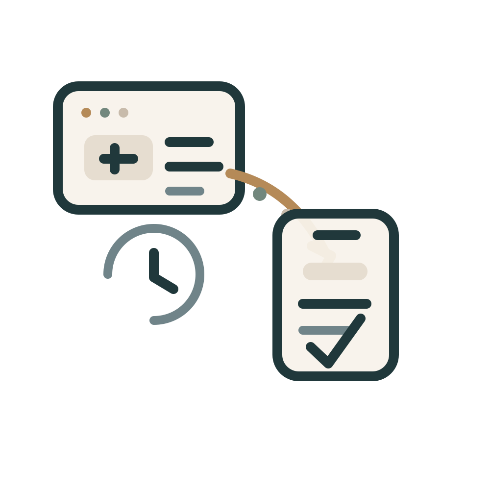
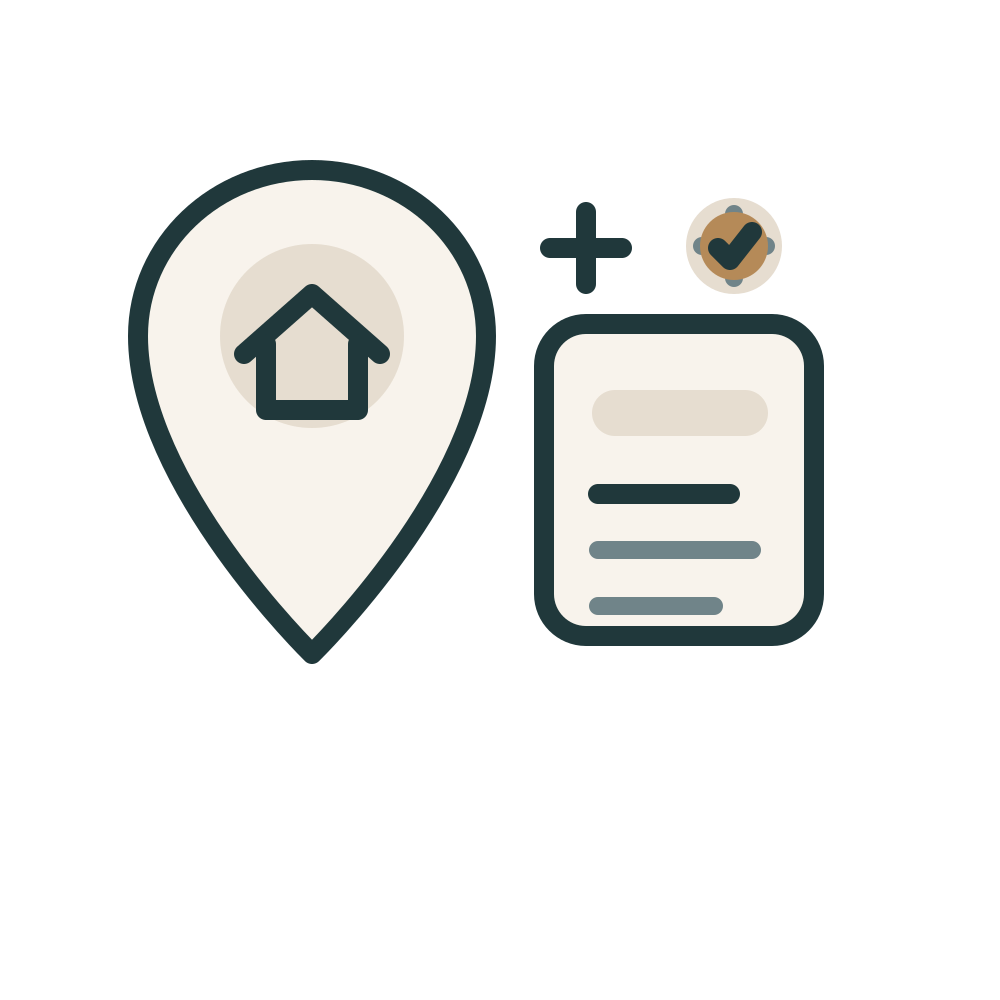
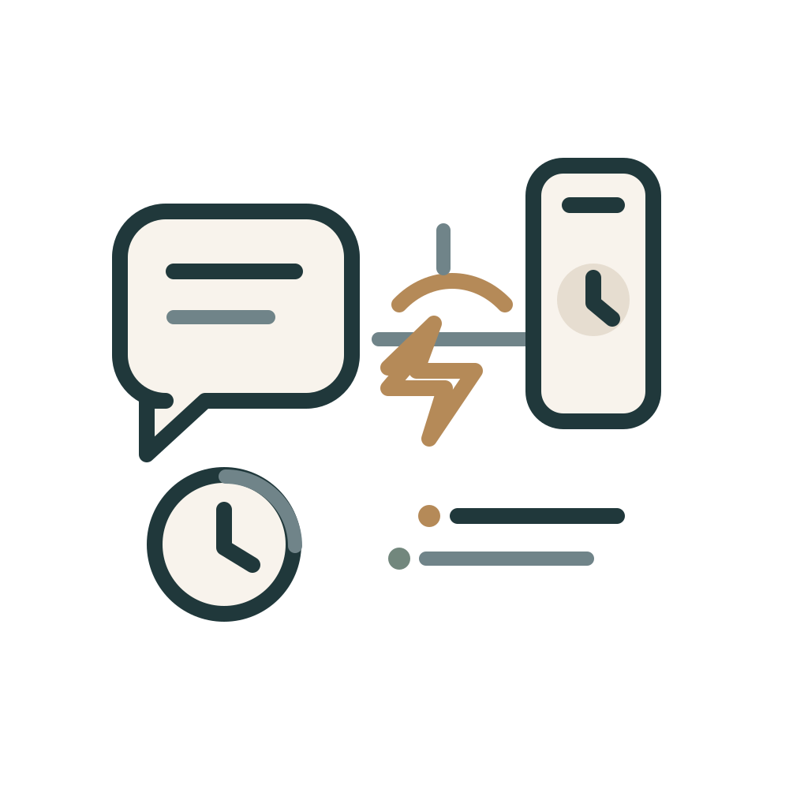
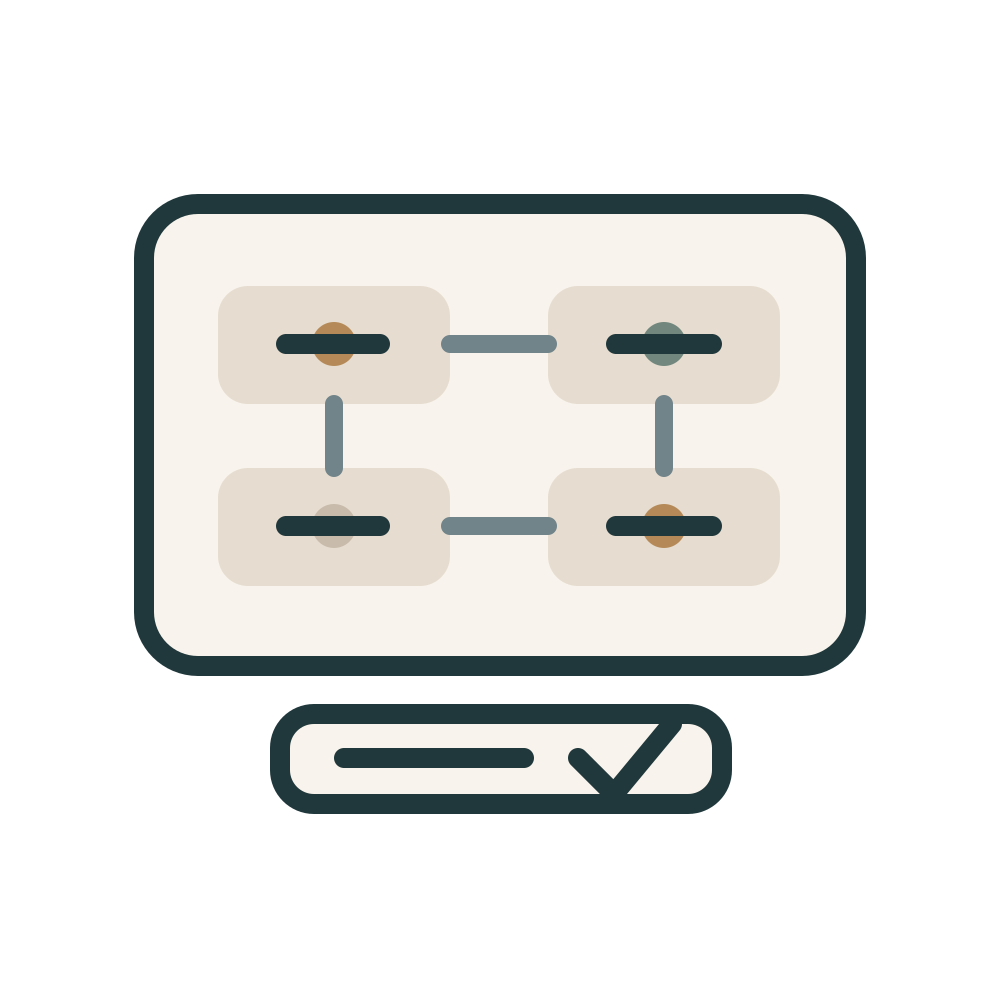
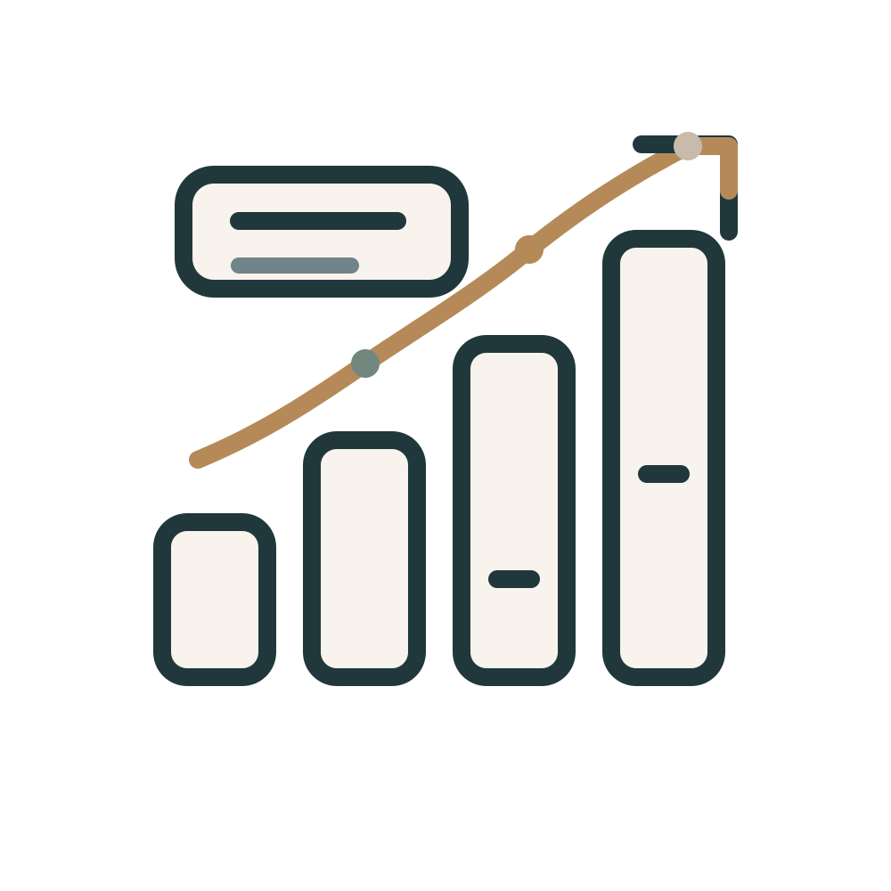

Built to make every lead count
Catalyst Web Systems helps small and mid-size US businesses look more credible online, respond faster to every inquiry, and keep ownership of the systems behind growth. We build premium websites, lead automations, and practical operational workflows that turn interest into booked work.
What makes Catalyst different
Why Catalyst exists
Every business doing real work deserves a web presence that actually works for them. Too many good operators lose business not because of the quality of their work, but because their website, follow-up, and digital systems are not keeping up. Catalyst was built to close that gap — not just for businesses with large budgets, but for every growing company that deserves the tools to compete, convert, and grow without being held back by outdated systems or overpriced agencies.
Access to a professional online presence should not be a luxury reserved for large brands with agency retainers. A growing e-commerce brand, a regional consulting firm, or a local services company all deserve the same quality of website, clarity of messaging, and follow-up reliability that their bigger competitors take for granted. Catalyst exists to make that standard accessible without the overhead and complexity that typically price smaller businesses out of the market.
Automation and technology are only valuable when they are applied deliberately and in ways that genuinely benefit the people using them. We do not add automation to sound sophisticated. We use it when it reduces friction, saves real time, and creates a better experience for both the business and the customer reaching out. Technology built around people produces clarity. Technology built around appearances produces confusion and dependency. We are careful about the difference, and that care shows in every system we design.
A completed website is not the same as a working website. A built automation is not the same as one that actually helps. We define success by whether leads move faster, whether customers feel more confident reaching out, and whether a business owner has less to worry about after someone finds them online. Our work is not finished when the last task is checked off. It is finished when the system does what it was built to do, and the person we built it for feels the difference.
Small business owners work too hard to end up locked into platforms they cannot leave, setups they cannot understand, or partners who hold the keys to their own growth. We build with full transparency and client-side ownership so businesses are stronger after working with us — not more reliant on us. The goal is to raise the floor for everyone: clear access, genuine tools, and systems that belong to the people using them.
Principles that guide how we build and how we work with clients

Catalyst started with a simple problem
We saw too many businesses doing good work while losing revenue between the first click and the first follow-up. Too often, strong operators were relying on weak websites, slow callbacks, and scattered systems that made growth harder than it needed to be. Catalyst exists to close that gap with clearer websites, faster response systems, and less operational friction — so good businesses stop losing easy opportunities.

We build for local trust, not vanity
The goal is not to impress other designers. It is to help a potential customer understand what you do, where you operate, and why they should contact you now. That means stronger service messaging, clearer location coverage, cleaner CTAs, and trust signals that make the next step obvious. Every page is structured around helping a real customer feel confident enough to reach out.

We care about speed after the click
A strong website matters, but response time closes work. We design the handoff between forms, calls, automations, and routing so new leads are acknowledged quickly and do not sit waiting until someone remembers to check a shared inbox. The system should react while interest is high, whether that means instant email confirmation, SMS follow-up, booking links, or the right alert landing with the right person at the right time.

We keep the systems practical
We do not add complexity to sound sophisticated. If a clean site, a better CTA path, and a reliable automation solve the problem, that is the right answer. We prefer systems that are easy to understand, easy to maintain, and easy for a business owner or office manager to actually use. Useful systems age better than impressive-looking ones that nobody can manage a month after launch.
Ownership stays with the client
Domains, forms, automations, and reporting should live in your accounts whenever possible. We build ownership-first so your business is never trapped inside a black-box setup that only works if an outside partner keeps the keys. The goal is to leave clients with clarity, access, and control over the assets that support growth, not a dependency loop that makes simple changes frustrating or expensive.

We build for where the business is going
The system should work on launch day and still make sense as lead volume grows. We plan for the next stage so your website, CRM, and automations can expand without forcing a full rebuild six months later. That means making decisions now that support better reporting, cleaner handoffs, and future automation layers as the business adds locations, services, or more inbound demand.
How we work
The process is intentionally lean. We focus on clarity, approvals, and fast execution so work moves quickly without becoming opaque.
Catalyst is built for small and mid-size US businesses where trust, speed, and reliable follow-up directly influence revenue — across every industry, from professional services and e-commerce to trades, healthcare, and hospitality.
A short, pressure-free call tells us where the real friction is. Sometimes it is a weak offer. Sometimes it is a slow website. Sometimes it is the handoff after someone fills out a form. We define scope around that actual bottleneck before code is written.
Most packages launch in 5 to 10 business days. That speed comes from narrow scopes, fast approvals, and staying focused on the pages, forms, routing, and systems that actually affect conversion.
Domains, integrations, automations, and data stay visible and accessible. We can keep supporting the system, but the goal is never to trap you inside a setup that only works if we remain the gatekeeper.
After launch, we continue with the same posture: direct, transparent, and practical. If the next improvement is small, we keep it small. If growth calls for more infrastructure, we build the next layer without forcing unnecessary complexity.